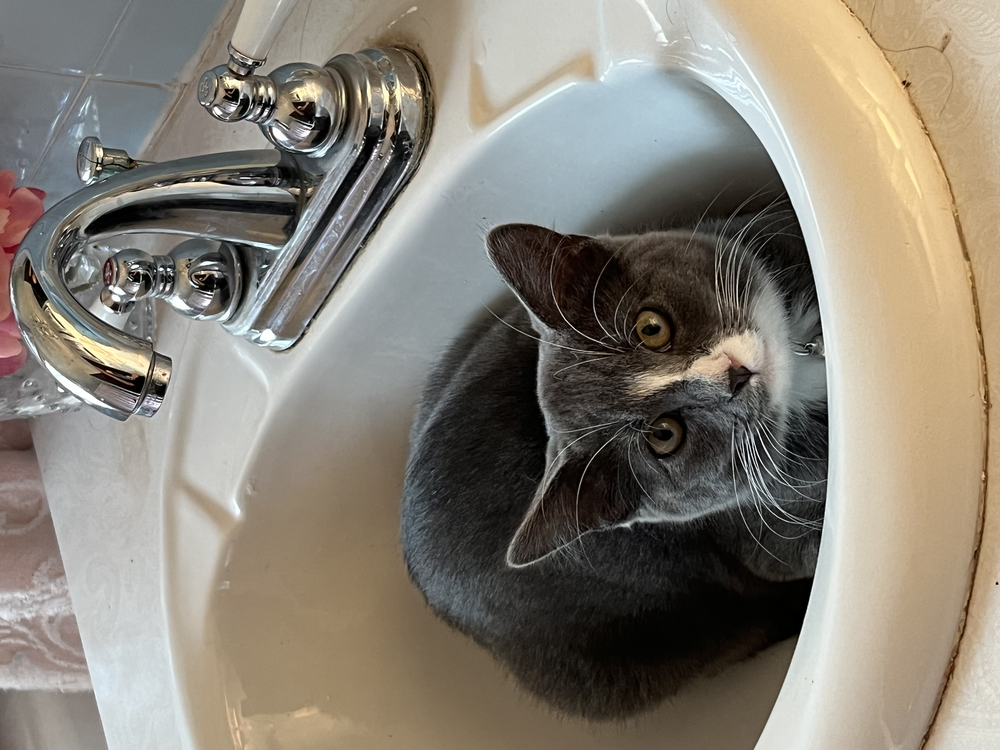

Beans in Sinks
Once Beans became big enough that he could easily jump on counters. He immediately became interested in sinks. This is fairly common with cats. We own four other cats and a few of them also enjoy sitting in sinks. But, none as much as Beans does. At least a few times a week I will catch him enjoying a sit in the sink. Whether it be the bathroom sink or the kitchen sink, he will sit in it guaranteed. Beans seems to be enamored with all things plumbing. He really enjoys sinks, but also toilets and bathtubs, as well. We hypothesize that he enjoys watching water go down drains. But, with sinks, I think he just finds them comfortable for lounging.
